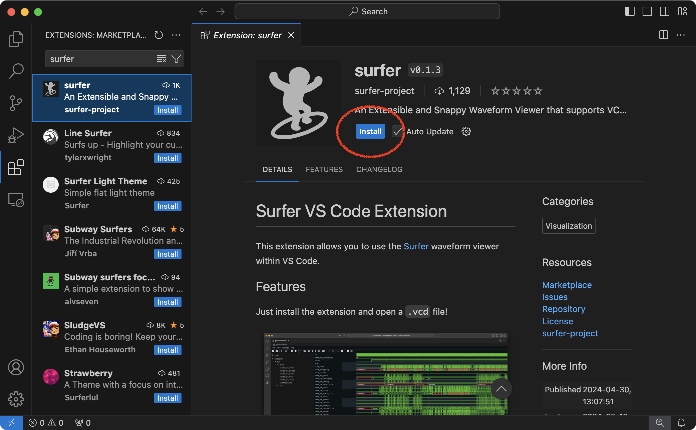
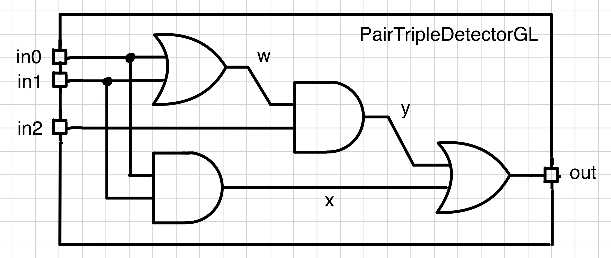
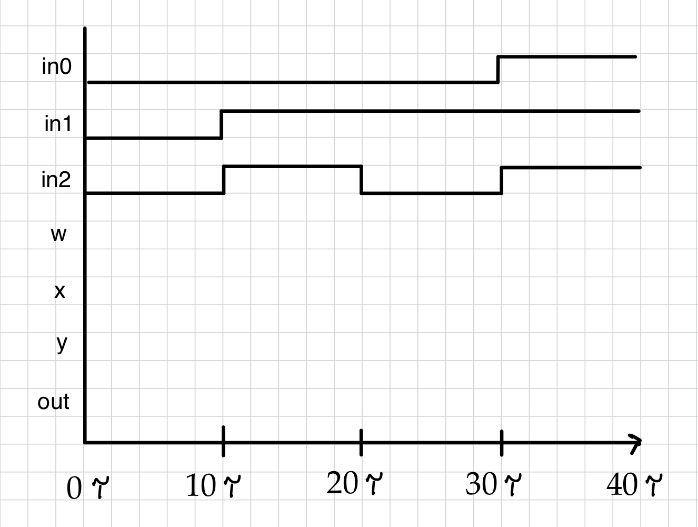
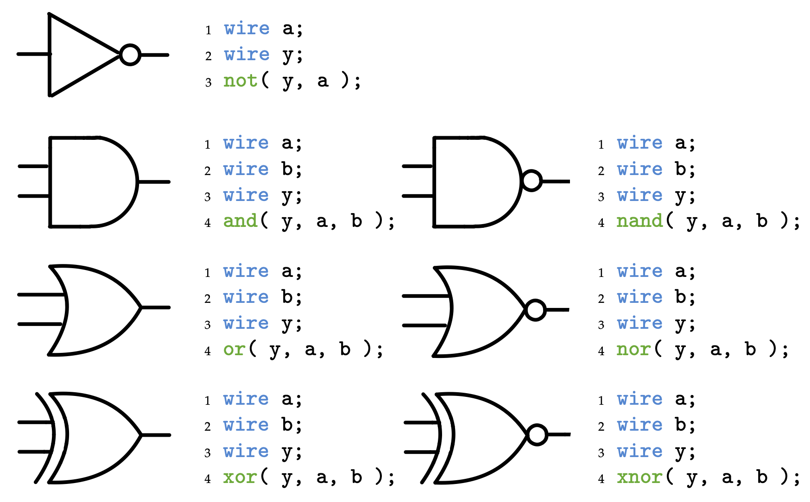

Section 2: Verilog Combinational Gate-Level Design
In this discussion section you will develop your first Verilog hardware design, build a simulator for your design, and then test the functionality of your design.
1. Logging Into ecelinux with VS Code
Follow the same process as last discussion section. Find a free workstation and log into the workstation using your NetID and standard NetID password. Then complete the following steps (described in more detail in the last discussion section):
- Start VS Code
- Install the Remote-SSH, Verilog, and Surfer extensions
- Use View > Command Palette to execute Remote-SSH: Connect Current Window to Host...
- Enter
netid@ecelinux.ece.cornell.edu - Install the Verilog and Surfer extensions on the server
- Use View > Explorer to open your home directory on
ecelinux - Use View > Terminal to open a terminal on
ecelinux
Note that installing the Surfer extension is new from last time.

You need to install the Surfer extension on both your local machine and the server. So you might need to disconnect from the server using File > Close Remote Connection. Now fork the GitHub repo we will be using in this discussion section. As mentioned last week, we won't actually be forking repos for the lab assignments, but it is an easy way for you to grab some example code for this discussion section and also to see how GitHub actions work. Go to the example repo here:
Click on the "Fork" button. Wait a few seconds and then visit the new copy of this repo in your own person GitHub workspace:
where githubid is your username on the public version of GitHub. Enable
GitHub Actions on this repo. Click on the Actions tab in your
repository on GitHub and click I understand my workflows, go ahead and
enable them. Now let's clone your new repo to the ecelinux machine.
% source setup-ece2300.sh
% mkdir -p ${HOME}/ece2300
% cd ${HOME}/ece2300
% git clone git@github.com:githubid/ece2300-sec02-verilog-gl sec02
% cd sec02
% tree
Where githubid is your username on the public version of GitHub. The
repo includes the following files:
PairTripleDetector_GL.v: Verilog for simple hardware modulePairTripleDetector_GL-adhoc.v: adhoc test for hardware moduleece2300-test.v: ECE 2300 unit testing libraryPairTripleDetector_GL-test.v: test cases for hardware module
2. Background on a Pair/Triple Detector
We will be using a pair/triple detector as the target hardware in this discussion section. A pair/triple detector has some number of input ports and one output port. The output is one if either two or three of the inputs are one, and is the output should be zero otherwise. Here is a truth table for a three-bit pair/triple detector.
| in0 | in1 | in2 | out |
|---|---|---|---|
| 0 | 0 | 0 | 0 |
| 0 | 0 | 1 | 0 |
| 0 | 1 | 0 | 0 |
| 0 | 1 | 1 | 1 |
| 1 | 0 | 0 | 0 |
| 1 | 0 | 1 | 1 |
| 1 | 1 | 0 | 1 |
| 1 | 1 | 1 | 1 |
Verify that this truth table matches the specification above. Here is a gate-level network that implements this truth table.

Here is an example of an incomplete simulation table for this gate-level network.
| in0 | in1 | in2 | w | x | y | out |
|---|---|---|---|---|---|---|
| 0 | 0 | 0 | ||||
| 0 | 1 | 1 | ||||
| 0 | 1 | 0 | ||||
| 1 | 1 | 1 |
Here is an example of an incomplete waveform which corresponds to the above simulation table.

Activity 1: Simulation Tables and Waveforms
Complete the above simulation table and waveform. Assume a zero delay model.
3. Implementing and Linting a Pair/Triple Detector in Verilog
In this part, we will first implement a pair/triple detector before linting the detector to check for errors.
3.1. Implementing a Verilog Design
Before implementing the pair/triple detector, you might want to review how to instantiate our primitive logic gates in Verilog.

We have provided you with the interface for the pair/triple detector in
PairTripleDetector_GL.v.
The module has three input ports and one output port. Notice that this
file has a _GL suffix which standes for "gate-level". We will use
various suffixes to clearly indicate what level of modeling is being used
within the implementation of the corresponding Verilog hardware design.
Open the PairTripleDetector_GL.v Verilog file using VS Code.
Activity 2: Implement a Pair/Triple Detector
Create a Verilog hardware design that implements a pair/triple detector by declaring wires, instantiating primitive logic gates, and connecting the wires and gates appropriately.
3.2. Linting a Verilog Design
Note that Verilog is a very relaxed language which allows all kinds of
sketch constructs many of which are only flagged with warnings. So we
will be using the open-source verilator tool to lint our Verilog
hardware designs. Linting means to check the design for static errors. It
is critical be clear that verilator will only check for static errors
(i.e., syntax errors) and does not actually test that your hardware
design has the desired dynamic behavior. We will use testing in the
next part to verify your hardawre design has the desired dynamic
behavior. There is more information about verilator on its webpage:
Here is how to use verilator to lint our design.
If verilator does not report any warnings or errors then you are ready
to compile a simulator; but let's purposefully make an error in our
Verilog hardware design. For example, modify your hardware design to
purposefully omit the semicolon at the end of the module interface.
`ifndef PAIR_TRIPLE_DETECTOR_V1_GL_V
`define PAIR_TRIPLE_DETECTOR_V1_GL_V
module PairTripleDetectorV1_GL
(
input wire in0,
input wire in1,
input wire in2,
output wire out
);
//''' ACTIVITY '''''''''''''''''''''''''''''''''''''''''''''''''''''''''
// Implement pair/triple detector using explicit gate-level modeling
//>'''''''''''''''''''''''''''''''''''''''''''''''''''''''''''''''''''''
endmodule
`endif /* PAIR_TRIPLE_DETECTOR_V1_GL_V */
The ifdef, define, and endif statements are for the Verilog
preprocessor and act as include guards; then ensure if we include a
Verilog module multiple times it is only inserted into the final Verilog
hardware design once.
Activity 3: Injecting a Static Bug
Try removing the semicolon after the closed parenthesis to create a
bug. Rerun verilator to lint your design. You should see an error.
verilator is much, much better at catching syntax bugs and providing
useful error messages. So we will always lint our designs first with
verilator, and then (only once we are sure there are no static
errors!) we will move on to testing our hardware design's
functionality.
4. Ad-Hoc Testing a Pair/Triple Detector in Verilog
In this part, we will first implement a test bench for our pair/triple detector before simulating the detector to test its functionality.
4.1. Implementing a Verilog Test Bench
Now that we have successfully linted our design, we want to test its functionality (i.e., make sure it produces the correct output for various inputs). We need to implement a Verilog test bench which will set inputs and check outputs. We can use Verilog to implement hardware designs and to implement test benches. It is critical we keep these two very different uses of Verilog separate! When using Verilog for hardware design we are using Verilog to model hardware. We must be very careful, restrict ourselves to a very limited subset of the Verilog language, and ensure we always know what is the hardware we are modeling. It is easy to write Verilog which does not model any real hardware! When using Verilog for test benches, we can use any part of the Verilog language we want; our goal is not to model hardware but to test hardware.
We have provided you a simple ad-hoc test bench in
PairTripleDetector_GL-adhoc.v. Take a look at this file in VS Code.
`include "PairTripleDetectorV1_GL.v"
module Top();
logic dut_in0;
logic dut_in1;
logic dut_in2;
logic dut_out;
PairTripleDetector_GL dut
(
.in0 (dut_in0),
.in1 (dut_in1),
.in2 (dut_in2),
.out (dut_out)
);
initial begin
$dumpfile("PairTripleDetector_GL-test.vcd");
$dumpvars;
dut_in0 = 0;
dut_in1 = 0;
dut_in2 = 0;
#10;
$display( "%b %b %b > %b", dut_in0, dut_in1, dut_in2, dut_out );
dut_in0 = 0;
dut_in1 = 1;
dut_in2 = 1;
#10;
$display( "%b %b %b > %b", dut_in0, dut_in1, dut_in2, dut_out );
dut_in0 = 0;
dut_in1 = 1;
dut_in2 = 0;
#10;
$display( "%b %b %b > %b", dut_in0, dut_in1, dut_in2, dut_out );
dut_in0 = 1;
dut_in1 = 1;
dut_in2 = 1;
#10;
$display( "%b %b %b > %b", dut_in0, dut_in1, dut_in2, dut_out );
end
endmodule
The include statement is used by the Verilog preprocessor and indicates
that the adhoc test depends on the Verilog hardware design. We start by
declaring four wires that will be connected to the design-under-test.
Note that we use logic not wire in test benches. A logic is a more
abstract kind of signal than a wire in Verilog. We then instantiates
the design-under-test (DUT) and hooks up the ports to the logic signals
we just declared.
An initial block is a special piece of code which starts running at the
beginning of a simulation. You should NEVER use an initial block when
modeling hardware. But it is perfectly fine to use an initial block in
your test benches. We call two system tasks ($dumpfile,$dumpvars) to
tell the simulator to output a VCD file which contains waveforms so we
can visualize what our hardware design is doing. Then we set input values
for all input ports. Then wait 10 units of time. Then we display all of
the input and output values. We do this four times with four different
sets of input values.
4.2. Ad-Hoc Testing a Verilog Design
Now that we have implemented and linted our Verilog hardware design and
implemented a test bench, we want to simulate our hardware design to
verify its functionality. We will be using the open-source iverilog
(Icarus Verilog) simulator. One weakness of iverilog is that its error
messages are not great; this is one of the primary reasons we always
want to lint our designs first using verilator. There is more
information about iverilog on its webpage:
When using iverilog there are always two steps. First, we create a
simulator and then we need to explicitly run the simulator to test
hardware design. Let's start by using iverilog to create a simulator
based on our pair/triple hardware design and test bench.
% cd ${HOME}/ece2300/sec02
% iverilog -Wall -g2012 -o PairTripleDetector_GL-adhoc PairTripleDetector_GL-adhoc.v
If there are no errors you should now have a simulator named
PairTripleDetector_GL-adhoc. Go ahead and execute the simulator.
The ad-hoc test will print out a simulation table. Compare it to the simulation table you created by hand earlier in this discussion section. You can also view the corresponding waveforms using the Surfer extension.
Find the Scopes panel and click on the arrow next to Top. Click on dut and then click on the signals in the Variables panel to see the waveforms.
5. Systematic Testing for a Pair/Triple Detector in Verilog
So far we have been using "ad-hoc" testing. Our test bench will display outputs on the terminal. If it is not what we expected, we can debug our hardware design until it meets our expectations. Unfortunately, ad-hoc testing is error prone and not easily reproducible. If you later make a change to your implementation, you would have to take another look at the output to ensure your implementation still works. If another designer wants to understand your implementation and verify that it is working, he or she would also need to take a look at the output and think hard about what is the expected result. Ad-hoc testing is usually verbose, which makes it error prone, and does not use any kind of standard test output. While ad-hoc testing might be feasible for very simple implementations, it is obviously not a scalable approach when developing the more complicated implementations we will tackle in this course.
We will be using a more systematic way to do automated unit testing
including standardized naming conventions, test benches, and test output.
We have provided you an example of such systematic testing in
PairTripleDetector_GL-test.v. Take a look at this file in VS Code.
The systematic test bench still declares four wires that will be
connected to the DUT, and also still instantiates the DUT and hooks up
the ports. We then declare a check task. We will be using Verilog tasks
in our test bench. Tasks are a Verilog feature used for creating test
benches and should be avoided when modeling hardware. A task is similar
to a function in a software programming language and are critical for
creating clean test benches.
task check
(
input logic in0,
input logic in1,
input logic in2,
input logic out
);
if ( !t.failed ) begin
dut_in0 = in0;
dut_in1 = in1;
dut_in2 = in2;
#8;
if ( t.n != 0 )
$display( "%3d: %b %b %b > %b", t.cycles,
dut_in0, dut_in1, dut_in2, dut_out );
`ECE2300_CHECK_EQ( dut_out, out );
#2;
end
endtask
The check task takes as values we want to use as input to test our
design, and the correct output values we want to check for. The task then
sets the input, waits for some amount of time, displays the input and
output values, and then checks that the output is as expected. We then
declare one or more test case tasks. Each test case task has a sequence
of checks. Here is the basic test case.
task test_case_1_basic();
t.test_case_begin( "test_case_1_basic" );
check( 0, 0, 0, 0 );
check( 0, 1, 1, 1 );
check( 0, 1, 0, 0 );
check( 1, 1, 1, 1 );
endtask
Finally, our test bench uses an initial block to decide which test cases to run.
initial begin
t.test_bench_begin( `__FILE__ );
if ((t.n <= 0) || (t.n == 1)) test_case_1_basic();
if ((t.n <= 0) || (t.n == 2)) test_case_2_exhaustive();
t.test_bench_end();
end
We can compile and run our systematic testing just like our ad-hoc testing.
% cd ${HOME}/ece2300/sec02
% iverilog -Wall -g2012 -o PairTripleDetector_GL-test PairTripleDetector_GL-test.v
% ./PairTripleDetector_GL-test
Remember, you can always use the up arrow key to retrieve a previously entered command. You can then quickly edit it as opposed to having to type a complete command from scratch.
The simple unit testing framework we provide you enables to specify a
single test case to run (with +test-case=1 or +test-case=2), and
generate a VCD file for viewing waveforms (with
+dump-vcd=waveform.vcd).
% cd ${HOME}/ece2300/sec02
% ./PairTripleDetector_GL-test +test-case=1
% ./PairTripleDetector_GL-test +test-case=1 +dump-vcd=PairTripleDetector_GL-test.vcd
Open up the waveforms in surfer.
Activity 4: Exhaustive Testing
Finish the second test case which should use exhaustive testing.
Exhaustive testing simply means we test all possible input values.
You can refer to the truth table from earlier in the discussion
section and simply have one check for every row in the truth table.
When you have finished rerun the the test using +test-case=2 to
make sure your test bench is testing what you think it is. Then
inject a bug (e.g., change an OR gate to a NOR gate) to see if the
test bench fails.
6. Automating the Development Process
The key to being a productive hardware designer is to automate as much of the process as possible. We will learn how to use a real build system in the next discussion section to help automate linting, compiling, simulating, and testing hardware designs. In this discussion section, we will briefly discuss two other wayts to automate the development process.
6.1. Using Bash Shell Scripts for Testing
If you find yourself continually having to use the same complex commands
over and over, consider creating a Bash shell script to automatically
execute those commands. A Bash shell script is just a text file with a
list of commands that you can run using the source command.
For example, let's create a Bash shell script to automatically lint,
compile, and run the systematic test bench developed earlier in the
discussion section. Use VS Code to open a new file called
PairTripleDetector_GL-test.sh (note that by convention we usually use
the .sh extension for Bash shell scripts).
Then enter the following commands into this new Bash shell script.
verilator -Wall --lint-only PairTripleDetector_GL.v
iverilog -Wall -g2012 -o PairTripleDetector_GL-test PairTripleDetector_GL-test.v
./PairTripleDetector_GL-test
Then save the Bash shell script and execute it using the source
command.
The script will automatically lint your design, compile your design with the test bench into a simulator, and then run the simulator to test your design all in a single step.
6.2. Using GitHub Actions for Continuous Integration
We will be using GitHub Actions for continuous integration which means that GitHub Actions will run all of your tests in the cloud every time you push to GitHub. Go ahead and commit your work and push to GitHub.
Then go to the Actions tab of your repo.
You should be able to see a workflow run. Click on the name of the workflow run, then click on sim, then if you click on Run sim_tests you should be able to see the output of running the tests in the cloud through GitHub Actions.
7. To-Do On Your Own
Let's say we started from just the original truth table for a pair/triple detector without the gate-level network. We can also directly transform this truth table into a (unoptimized) Verilog hardware design. We first use four NOT gates to create the complement of each input. We then declare eight wires, one for each row in the truth table. We use eight AND gates so each to ensure each of the eight wires will be true for a different row in the truth table. Then we OR together all of the wires where the output in the truth table is one to derive the final output.
module PairTripleDetector_GL
(
input wire in0,
input wire in1,
input wire in2,
output wire out
);
// NOT gates to create complement of each input
wire in0_b, in1_b, in2_b;
not( in0_b, in0 );
not( in1_b, in1 );
not( in2_b, in2 );
// AND gates for each row in the truth table
wire min3, min5, min6, min7;
// and( min0, in0_b, in1_b, in2_b );
// and( min1, in0_b, in1_b, in2 );
// and( min2, in0_b, in1, in2_b );
and( min3, in0_b, in1, in2 );
// and( min4, in0, in1_b, in2_b );
and( min5, in0, in1_b, in2 );
and( min6, in0, in1, in2_b );
and( min7, in0, in1, in2 );
// OR together all wires where output in truth table is one
or( out, min3, min5, min6, min7 );
endmodule
Note that we have commented out the minterms which are not used to avoid causing linting errors. It is still nice to have these minterms as comments to make it easier to write all the minterms out.
Using explicit gate-level modeling can be tedious. We can also directly implement Boolean equations in Verilog. Here is how our primitive gates can be implemented using Boolean equations.
| Explicit Gate-Level Modeling | Boolean Equations |
|---|---|
not( y, a ); |
assign y = ~a; |
and( y, a, b ); |
assign y = a & b; |
nand( y, a, b ); |
assign y = ~(a & b); |
or( y, a, b ); |
assign y = a | b; |
nor( y, a, b ); |
assign y = ~(a | b); |
xor( y, a, b ); |
assign y = a ^ b; |
xnor( y, a, b ); |
assign y = ~(a ^ b); |
Here is the exact same gate-level network implementing the pair/triple detector except now implemented using Boolean equations.
module PairTripleDetector_GL
(
input wire in0,
input wire in1,
input wire in2,
output wire out
);
wire w;
wire x;
wire y;
assign w = in0 | in1;
assign x = in0 & in1;
assign y = w & in2;
assign out = y | x;
endmodule
You can also of course use substitution to easily express the output in a single Boolean equation.
module PairTripleDetector_GL
(
input wire in0,
input wire in1,
input wire in2,
output wire out
);
assign out = ((in0|in1) & in2) | (in0 & in1);
endmodule
Just as with explicit gate-level modeling, we can also directly transform the original truth table for a pair/triple detector into a Verilog hardware design using Boolean equations.
module PairTripleDetectorV5_GL
(
input wire in0,
input wire in1,
input wire in2,
output wire out
);
// AND gates for each row in the truth table
wire min3, min5, min6, min7;
// assign min0 = ~in0 & ~in1 & ~in2;
// assign min1 = ~in0 & ~in1 & in2;
// assign min2 = ~in0 & in1 & ~in2;
assign min3 = ~in0 & in1 & in2;
// assign min4 = in0 & ~in1 & ~in2;
assign min5 = in0 & ~in1 & in2;
assign min6 = in0 & in1 & ~in2;
assign min7 = in0 & in1 & in2;
// OR together all wires where output in truth table is one
assign out = min3 | min5 | min6 | min7;
endmodule
again, we have commented out the minterms which are not used to avoid causing linting errors. It is still nice to have these minterms as comments to make it easier to write all the minterms out.
We now have explored four new approaches to implementing a pair/triple
detector. All four are equivalent with our original implementation.
Modify your implementation in PairTripleDetector_GL.v based on one of
these new approach and then rerun the ad-hoc and systematic tests to
verify your new implementation is correct.